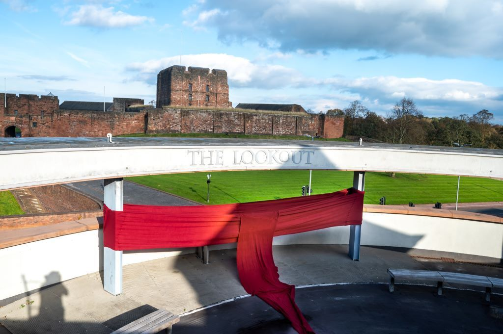
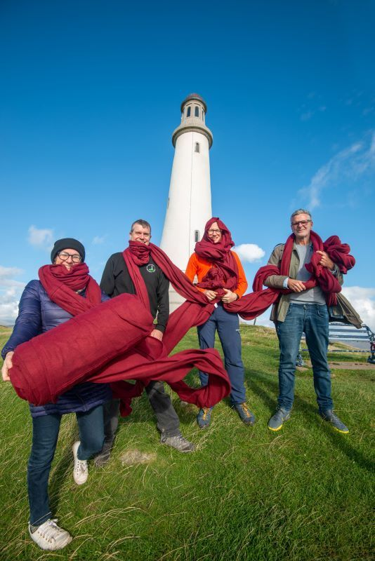
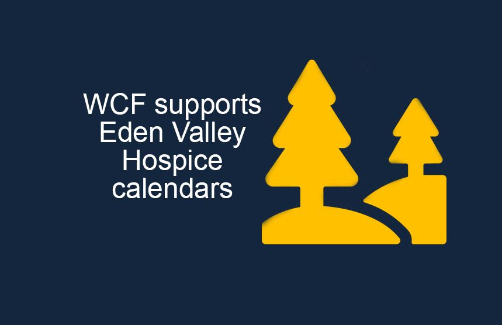

WCF supports Cumbria Community Foundation’s Winter Warmth Appeal
WCF has supported the Cumbria Community Foundation’s Winter Warmth Fund since 2018. WCF participates as a
match funding champion and have donated almost £70,000 since we started
supporting the appeal. The purpose of the Winter Warmth Appeal is to provide
Cumbria’s vulnerable and elderly with financial support for their heating
bills. The Winter Warmth Appeal sees money donated by the public then
redistributed to those most in need, to allow them to stay warm without
worrying about the cost. Cumbria Community Foundation has run its Winter Warmth Fund Appeal every year since 2010. Originally it was set up to encourage people to donate
their winter fuel allowance to those people who didn’t need it. Last year, the Winter Warmth Appeal raised
£661,908, the highest total since it was launched in 2010. The record-breaking
year enabled the fund to make 2,413 grants which benefited more than 3,223
people.
Jenny Benson, Director of Programmes & Partnerships at Cumbria Community Foundation, said: "It’s well known that colder weather exacerbates respiratory and circulatory diseases. Many local older people are at risk and even die because of the combined effects of fuel poverty and social isolation. WCF’s continued support of our Winter Warmth Appeal is fantastic. Donations are so vital in a year that has seen even more people plunged into fuel poverty because of the rising energy prices and the continuing cost of living crisis. We are being told by our delivery partners at Age UK just how desperate a situation it is for people who are being forced to choose whether they eat or heat their homes. All districts in Cumbria have a higher proportion of households living in fuel poverty than the national average, with over 33,000 households suffering. Sadly, it is our older population that is more at risk.”
Our Executive Chair Jo Ritzema explains why WCF are keen supporters of the Winter Warmth Appeal ““As a part employee-owned business, giving back to our local communities is part of our ethos and we’re proud to support the Winter Warmth Fund which provides vital support for vulnerable older people in Cumbria who are facing fuel poverty. As the owners of one of Cumbria’s largest oil distributors Allan Stobarts, we understand the isolation of rural communities, especially during the winter months, which is why we make our most vulnerable customers a priority for heating oil deliveries during cold weather conditions.”

Customers aged 75 or over can also sign up to the free Cold Weather Priority Initiative which enables heating oil distributors to identify and prioritise those most at risk, especially during cold weather. The initiative is operated by the UK and Ireland Fuel Distributors Association (UKIFDA), of which WCF is a member. Jo added: “As one of Cumbria’s largest oil distributors, we understand the isolation of rural communities, especially during the winter months, which is why we make our most vulnerable customers a priority for heating oil deliveries during cold weather conditions.”
Jo finished by adding “We put our team and the rural communities in which they live and work at the heart of our business and take their lead to provide long-standing support to the charities and organisations which are important to them, as well as supporting their own fund-raising activities in any way we can, such as doubling any money they raise for charity. With the impact of the cost-of-living crisis and rising energy bills, it’s never been more important to support those who cannot afford to heat their homes this winter and are at risk as a result. I would urge anyone who is able to get behind the Winter Warmth campaign and make a real difference to people’s lives in Cumbria."

Press Links
- Heating or eating: Winter Warmth Appeal launches in Cumbria
- Double your money pledge to help older people with heating
< Previous Article
WCF supports Eden Valley Hospice calendars
